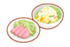

ALL

上位素材を除く
上位素材使用のみ
制限なし
30
40
57
63
69
以上
以下
----
あじわいキノコ
あったかジンジャー
あまいミツ
あんみんトマト
おいしいシッポ
げきからハーブ
とくせんエッグ
とくせんリンゴ
ふといながねぎ
ほっこりポテト
ピュアなオイル
マメミート
めざましコーヒー
モーモーミルク
リラックスカカオ
ワカクサコーン
ワカクサ大豆
料理の材料一覧を表示